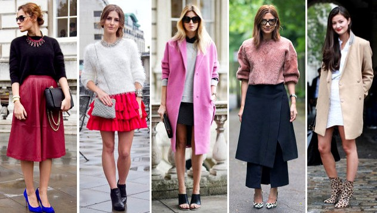

Откакто съществува, модата съчетава в себе си подходящата материя,
неповторимата кройка, уникалните пропорции на човешкото тяло и внимателно подбраните към тях прическа и аксесоари.
Всичко това прави модата перфектна за своето време.
През вековете модните тенденции винаги са гонили тази перфектност.
Дали с подчертаването на фалшива небрежност или със строго изразени граници, модата винаги е била несравнимо средство за комуникация.

Още от Античността, жената е намерила множество начини да комуникира със срещуположния пол. Макар и не до там осъзнато, още тогава
всяка точка от визията на жената е въздействала по определен начин върху възприятията на мъжа. От своя страна мъжът в Античността,
в ролята си на скулптор и художник, е засвидетелствал всички свои познания върху човешкото тяло. Съвсем умишлено той е обозначавал
жизненоважните органи – половата система, очи, уши, уста и така е наблягал на тяхната ключова функция.
Нашите модни предложения - за вас!